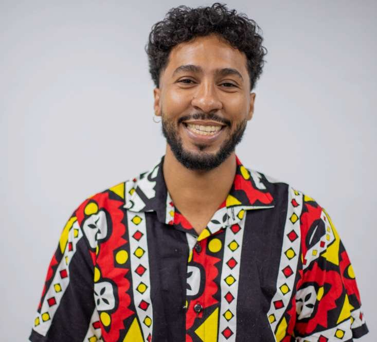

Pesquisador das relações étnico-raciais, juventudes negras e cultura hip hop na escola. Professor de Educação Física, host do podcast Papo de Escola e voluntário do projeto Anjos d'Rua.

Sou doutorando do Programa de Pós-Graduação Interdisciplinar em Estudos do Lazer (EEFFTO/UFMG), mestre em Educação pelo Programa de Pós-Graduação em Educação: Conhecimento e Inclusão (FaE/UFMG) e licenciado em Educação Física pela UFMG.
Sou professor pesquisador do Grupo de Estudos e Pesquisa Pensando a Educação Física Escolar (IFMG) e do grupo Áfricas e eu: Reconhecendo e valorizando a diversidade étnico-racial na educação básica, técnica e tecnológica (UFMG), além do grupo EduDança (UFMG). Sou professor do Centro Pedagógico, colégio de Educação Básica e Profissional da UFMG, e professor voluntário do projeto sociocultural Anjos d' Rua.
Tenho interesse nos seguintes temas: intervalo escolar, relações étnico-raciais, juventudes, identidades, cultura negra, trajetórias escolares, formação de professores, Educação Física escolar, inclusão e lazer.
UFMG · Orientadora: Elisângela Chaves · Hip Hop, Danças, Relações étnico-raciais
FaE/UFMG · Encontros, desencontros e resistências: olhares de jovens negras/os sobre as relações étnico-raciais na escola
UFMG · Recreio, lazer e juventudes: o recreio como possibilidade de fruição das práticas de lazer na escola
Meu trabalho conecta lazer, escola e cultura negra, investigando como juventudes negras vivem, resistem e criam dentro e fora da sala de aula.
Investigo o intervalo escolar como espaço de fruição do lazer e como território de disputa e expressão das juventudes.
Pesquiso encontros, desencontros e resistências de jovens negras/os nas relações étnico-raciais vividas na escola.
No doutorado, investigo o hip hop e as danças como práticas corporais e pedagógicas ligadas às relações étnico-raciais.
Programa de rádio/TV que produzo e apresento, levando ao público conversas sobre educação, cultura e as relações étnico-raciais na escola.
Podcast Folha na Escola — Entrevista
Papo de Escola: Educação Quilombola e a Escola
Papo de Escola: Reforma do Ensino Médio para quem?
Papo de Escola: Educação e (In)visibilidades — Escolas dos Povos Indígenas
Papo de Escola: Educação e (In)visibilidades — Transexualidade e a Escola
Papo de Escola: Relações étnico-raciais e a Escola
Lista completa de mais de 37 episódios disponível no Currículo Lattes.
Uma seleção da produção bibliográfica. A lista completa, incluindo trabalhos em anais de congressos, está disponível no Currículo Lattes.
* Links serão atualizados conforme disponibilidade nas páginas das editoras/periódicos.
Atuo como professor voluntário neste projeto sociocultural, que utiliza a dança como tecnologia social negra afirmativa, conectando juventudes a práticas corporais de pertencimento e resistência.
Grupo de pesquisa da UFMG dedicado a reconhecer e valorizar a diversidade étnico-racial na educação básica, técnica e tecnológica.
Para convites de entrevista no Papo de Escola, colaborações de pesquisa, palestras ou parcerias com o Anjos d'Rua — entre em contato.